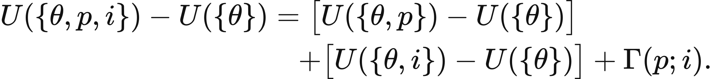
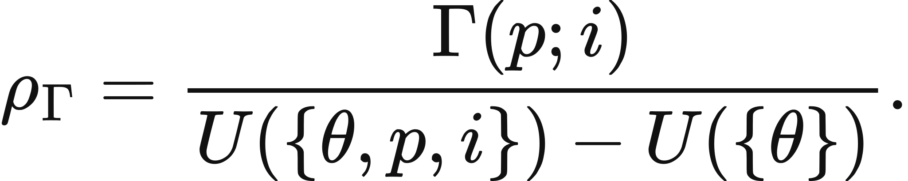

Executed locally with a fresh process and IPython kernel. This page is a reading edition; it does not run code. Constructed examples do not measure deployed agents.
A memory component and a retrieval component improve a document controller together. The intact score alone cannot tell you whether their joint contribution was additive, whether one carried most of the gain, or whether the pair mattered specifically through their interaction. That question needs four configurations, including the often neglected configuration with neither component.
The notebook uses the chapter's task-relative decomposition. You will subtract the two isolated gains from the whole-system gain, then decide whether a share can honestly be called a fraction. The matched budget fields make one comparability condition visible. They do not stand in for matching task distribution, measurement, or information access.
Outcome: Compute the signed four-cell contrast, positive amount, and valid share.
Guided route: Run the worked calculation, inspect its figure, change the stated assumption, and try the transfer case. Read the explanations beside each result before opening the answers.
Deeper route: First read the mathematics and canonical equation reference. Audit the input contract, predict the changed result, then inspect the shared chapter implementation and solve the questions independently. Both routes use the same calculations and preserve the equations.
Python 3.11 or later, the complete laboratory folder, and the notebook dependencies listed in requirements-notebooks.txt (the launcher's Install notebook tools choice installs them; see START-HERE). Standard-library chapter commands also support Python 3.10. No API key, model account or network call is used by this experiment.
Prior knowledge:
Write the four scores as U00,U10,U01,U11. The interaction contrast is Gamma=U11-U10-U01+U00. Let a=U10-U00 and b=U01-U00 be the isolated gains. The joint gain is J=U11-U00, and the identity J=a+b+Gamma is exact on the declared score scale.
The chapter-defined positive interaction amount is E=max(0,Gamma). It suppresses negative interaction for that specific amount convention but does not erase the signed contrast. Report both. The signed ratio Gamma/J exists when J is nonzero. Its interpretation as a cooperation fraction requires J>0, a>=0, b>=0, and Gamma>=0. Under those conditions the exact decomposition guarantees a ratio between zero and one.
An additive contrast depends on the score scale. A nonlinear transformation can change it, even when intact rankings remain unchanged. Equal budgets support one condition of a matched ablation; unequal budgets confound component status with resource exposure. Neither condition alone proves an internal mechanism or warrants a universal ranking of emergence.
Supply the four scores and four budgets in the documented order. The code checks vector lengths and finite numeric domains, calculates isolated contributions, signed contrast, positive amount, joint gain, and both ratio variants. The fraction field is unavailable when its domain conditions fail.
Two figures show the observed cells and the additive decomposition. The decomposition includes the baseline and contributions, so read its table order carefully. In the changed case the intact configuration receives twice the budget while all scores remain the same. The arithmetic is unchanged; the matched-comparison conclusion changes. This is deliberate: a diagnostic should expose an invalid inference even when the calculator can still evaluate a formula.
The next cell finds the bundle and imports the same computation used by the chapter skill. It does not change your system Python.
from pathlib import Path
import sys, json
LAB_ROOT = next((p for p in [Path.cwd(), *Path.cwd().parents] if (p / "lab-manifest.json").is_file()), None)
if LAB_ROOT is None:
raise RuntimeError("Open this notebook from the complete extracted laboratory folder.")
sys.path.insert(0, str(LAB_ROOT / "src"))
from math_ai_agents.core import analyze, report_text
from math_ai_agents.plotting import figure_svg
from IPython.display import SVG, display
Set the declared inputs below. These are constructed teaching values, not measurements from a production agent. Change a value only after predicting what it should change.
chapter = 2
inputs = {'scores': [0.2, 0.3, 0.25, 0.8], 'budgets': [10, 10, 10, 10]}
report = analyze(chapter, inputs)
# This input was explicitly taken from the teaching fixture.
report['evidence_kind'] = 'constructed teaching example'
print(report_text(report))Chapter 2: four-cell-interaction
What did these two components contribute together beyond their isolated gains?
Evidence: constructed teaching example
Calculated quantities:
{
"interaction": 0.45,
"positive_amount": 0.45,
"joint_gain": 0.6,
"signed_share": 0.75,
"fraction_share": 0.75,
"budget_matched": true
}
Interpretation:
Matched budgets support the specified four-cell comparison; they do not alone identify a mechanism.
Assumptions:
- Cell order is neither, first only, second only, both.
- Task, measurement, and all uncontrolled conditions must also match.
Limitations:
- A ratio outside the fraction domain is signed arithmetic, not a cooperation fraction.
- No uncertainty is available from four means alone.
Execution: completed locally; constructed inputs are not deployment measurements.
The isolated gains are 0.10 and 0.05. The intact joint gain is 0.60. Subtracting gives Gamma=0.45, with positive amount 0.45 and fraction share 0.45/0.60=0.75. The additive prediction for the intact score would have been 0.35; the observed intact score is 0.80.
The changed budget table leaves those numbers untouched but sets budget_matched to false. It therefore does not support attributing the contrast to the component pair under equal resources. More intact compute is a competing explanation. The appropriate response is to rerun matched configurations, not to rename the same arithmetic a controlled result.
The plot below uses the calculated quantities. Read each panel's units before comparing its values.
display(SVG(figure_svg(report)))Matplotlib is building the font cache; this may take a moment.
Figure 2.L1: Calculated chapter experiment. Each panel labels its input and output units; interpret it under the assumptions printed in the report.
A large intact score can coexist with a small interaction because the baseline was already strong. A negative interaction can coexist with useful components because their separate gains overlap. Neither case is a mathematical error. Problems arise when every signed ratio is presented as a percentage of cooperation.
The transfer table has negative Gamma. Its joint gain remains positive, so a signed ratio exists, but the fraction field is unavailable. Treating a negative number as a cooperation fraction would confuse an algebraic decomposition with a bounded share.
Means alone also do not supply uncertainty. Replicate-level matched outcomes or a declared sampling model are needed to quantify it. A budget check cannot recover that missing evidence. Preserve the four-cell experimental contract before using the result to choose which mechanism to retain or investigate.
changed_inputs = {'scores': [0.2, 0.3, 0.25, 0.8], 'budgets': [10, 10, 10, 20]}
changed = analyze(chapter, changed_inputs)
changed['evidence_kind'] = 'constructed changed-assumption example'
print(report_text(changed))
display(SVG(figure_svg(changed)))Chapter 2: four-cell-interaction
What did these two components contribute together beyond their isolated gains?
Evidence: constructed changed-assumption example
Calculated quantities:
{
"interaction": 0.45,
"positive_amount": 0.45,
"joint_gain": 0.6,
"signed_share": 0.75,
"fraction_share": 0.75,
"budget_matched": false
}
Interpretation:
The contrast is a decomposition on the chosen score scale. Unequal budgets prevent interpreting it as a matched component comparison.
Assumptions:
- Cell order is neither, first only, second only, both.
- Task, measurement, and all uncontrolled conditions must also match.
Limitations:
- A ratio outside the fraction domain is signed arithmetic, not a cooperation fraction.
- No uncertainty is available from four means alone.
Execution: completed locally; constructed inputs are not deployment measurements.
Figure 2.L2: The changed-assumption result. Compare the printed quantities and the stated assumptions with the first run. A different input need not imply a causal effect in a deployed agent.
For the transfer scores, the isolated gains are 0.35 for the first operation and 0.30 for the second (the chapter's p and i), while the joint gain is 0.50. Gamma is -0.15, and the signed ratio is -0.30. The positive amount is zero. The intact configuration still outperforms the baseline, so negative interaction does not mean the assembled system is useless.
Use a local ablation table only after declaring which two operations are varied and what stays fixed. Include the neither configuration, even when it seems uninteresting. Its score determines the decomposition. If budgets or task populations differ, export that comparability failure alongside the arithmetic and specify the matched measurements needed next.
transfer_inputs = {'scores': [0.2, 0.55, 0.5, 0.7], 'budgets': [8, 8, 8, 8]}
transfer = analyze(chapter, transfer_inputs)
transfer['evidence_kind'] = 'constructed transfer example'
print(report_text(transfer))Chapter 2: four-cell-interaction
What did these two components contribute together beyond their isolated gains?
Evidence: constructed transfer example
Calculated quantities:
{
"interaction": -0.15,
"positive_amount": 0,
"joint_gain": 0.5,
"signed_share": -0.3,
"fraction_share": null,
"budget_matched": true
}
Interpretation:
Matched budgets support the specified four-cell comparison; they do not alone identify a mechanism.
Assumptions:
- Cell order is neither, first only, second only, both.
- Task, measurement, and all uncontrolled conditions must also match.
Limitations:
- A ratio outside the fraction domain is signed arithmetic, not a cooperation fraction.
- No uncertainty is available from four means alone.
Execution: completed locally; constructed inputs are not deployment measurements.
The example file below has the exact input shape the method accepts. Copy it to a new file, replace its values, then point reader_file at your copy. Run the cell again. Supplied inputs retain their stated provenance; the program cannot establish that they are representative observations.
reader_file = LAB_ROOT / 'data/examples/ch02.json'
reader_inputs = json.loads(reader_file.read_text())
reader_report = analyze(chapter, reader_inputs)
print(report_text(reader_report))Chapter 2: four-cell-interaction
What did these two components contribute together beyond their isolated gains?
Evidence: supplied local inputs; provenance not independently verified
Calculated quantities:
{
"interaction": -0.15,
"positive_amount": 0,
"joint_gain": 0.5,
"signed_share": -0.3,
"fraction_share": null,
"budget_matched": true
}
Interpretation:
Matched budgets support the specified four-cell comparison; they do not alone identify a mechanism.
Assumptions:
- Cell order is neither, first only, second only, both.
- Task, measurement, and all uncontrolled conditions must also match.
Limitations:
- A ratio outside the fraction domain is signed arithmetic, not a cooperation fraction.
- No uncertainty is available from four means alone.
Execution: completed locally; constructed inputs are not deployment measurements.
Verify the decomposition.
What changes when only the intact budget doubles?
Is -0.30 a cooperation fraction in the transfer case?
Answers: separate solutions. Try the calculation before opening them.
Four matched cells identify a task-relative additive interaction on a declared score scale. The signed contrast, positive amount, and valid fraction answer different questions. The default example has a positive contrast and a valid share; changed budgets invalidate matched attribution; the transfer case has negative interaction despite positive joint gain. Keep the baseline, isolated gains, resource contract, and score scale in the report. Arithmetic alone cannot identify a mechanism or supply missing experimental uncertainty.
Limits of this experiment:
The assistant skill is maa-02-four-cell-interaction. It uses this notebook's tested computation and input contract.
These are the unchanged display equations and their explanations from the canonical chapter. They are a reference for the experiment, not a claim that every equation is numerically implemented by this one method.
Equation (2.1) asks whether anything is left over after each operation is credited for what it accomplishes alone.
Take the score with both operations, subtract each single-operation score, then add the neither score back once because the subtractions removed it twice.
LaTeX source, preserved for inspection:
\Gamma(p;i)=U(\{\theta,p,i\})-U(\{\theta,p\})-U(\{\theta,i\})+U(\{\theta\}).
\tag{2.1}
LaTeX source, preserved for inspection:
\Gamma(p;i)=0.80-0.30-0.25+0.20=0.45.

Equation (2.2) splits the whole improvement from neither operation to both into three named pieces: what each buys alone, plus what the pair adds.
The left side is the total gain; the first two right-hand terms are the isolated gains; the last term is whatever the pair achieves beyond them.
LaTeX source, preserved for inspection:
\begin{aligned}
U(\{\theta,p,i\})-U(\{\theta\})
&=\bigl[U(\{\theta,p\})-U(\{\theta\})\bigr]\\
&\quad+\bigl[U(\{\theta,i\})-U(\{\theta\})\bigr]
+\Gamma(p;i).
\end{aligned}
\tag{2.2}

Equation (2.3) reports the interaction as a share of the total joint gain, so the size of a contrast can be compared against what was available to win.
Divide the interaction contrast by the whole improvement from neither operation to both.
LaTeX source, preserved for inspection:
\rho_\Gamma=\frac{\Gamma(p;i)}{U(\{\theta,p,i\})-U(\{\theta\})}.
\tag{2.3}